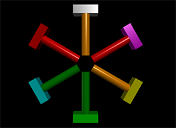

clone¶
Once you have created an object, you can make copies of it using clone. All properties of the new object will be exactly the same as those of the original. All objects other than triangles and quads can be cloned. Clone is actually a method of objects, hence the syntax:
- mycopy = myobject.clone(pos=vec(0,2,0), canvas=scene2 )
- Parameters:
pos (vector) – The position of the new object.
canvas (object) – Not available for compound or extrusion objects. The canvas to which the new object should belong. Default is scene or current canvas.
Additional parameters:¶
The new object has all the usual attributes of its class: color, size, etc.